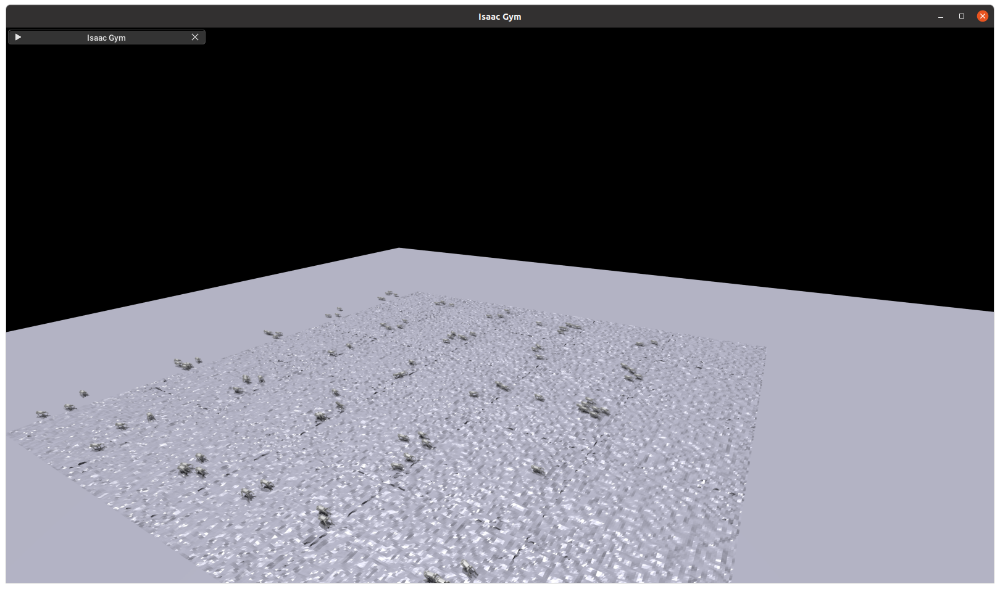
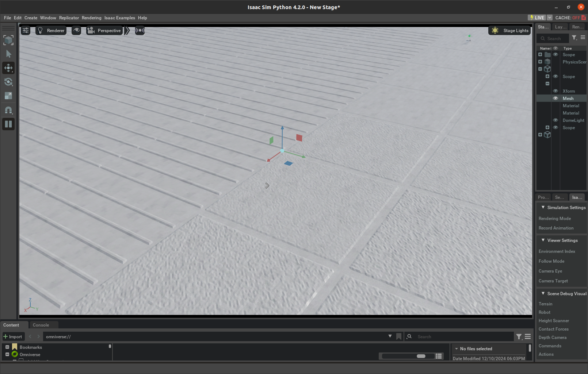
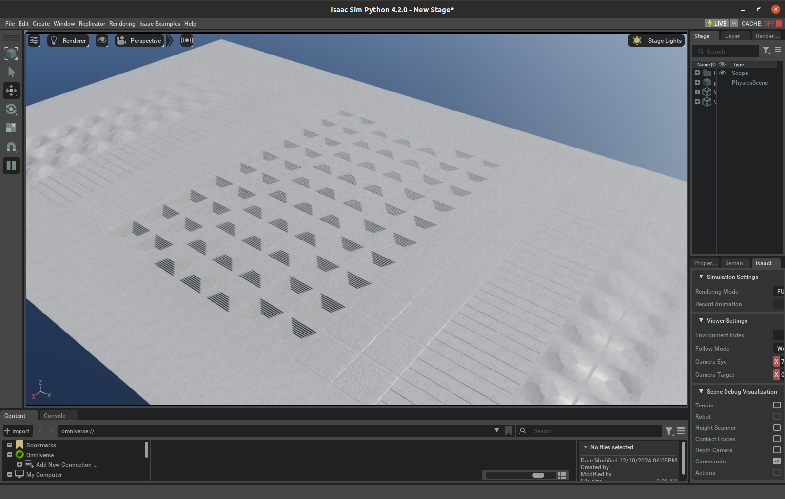

Recent advancements in locomotion control have significantly improved the agility and stability of robots. Among these developments, Reinforcement Learning (RL) has emerged as a promising approach, enabling robots—particularly quadruped robots—to tackle remarkably challenging tasks, such as parkour and navigating complex, unstructured terrains. However, RL-based controllers often exhibit challenges, such as generating asymmetric or unpredictable gaits. Additionally, current RL policies frequently adopt a one-size-fits-all approach for all terrains, resulting in excessive noise and unnatural movements on structured and flat surfaces. In this project, we propose a training pipeline to achieve stable and refined walking patterns in quadruped robots. We define \textit{elegance} as replicating the walking patterns of animals, characterized by long, low strides and consistent body height. Our approach involves refining training environment parameters and terrain design to promote natural, symmetric gaits across terrain. Furthermore, we explore using a depth camera to enhance the robot's ability to climb stairs and navigate rough terrains.
Our reinforcement learning framework utilizes IsaacSin as the primary simulation environment to train quadruped robots on various terrains. The training setup is meticulously crafted to facilitate the development of stable, symmetric, and elegant walking gaits.
The training environment features diverse terrain types, including flat surfaces, rough terrains, and structured obstacles like horizontal rails and waves. These terrains are systematically arranged to challenge and refine the robot's locomotion capabilities. For vision-based policies, predictable terrains are employed to aid learning from depth camera data.
The reward function integrates multiple components such as linear and angular velocity tracking, joint accelerations, collision avoidance, and base height maintenance. These elements are weighted to encourage natural gaits while minimizing unnatural behaviors like pronking or galloping.
Leveraging parallel environments on high-performance GPUs, the model is trained across thousands of iterations to achieve convergence within a short time frame. Sparse terrain obstacles are introduced to encourage natural walking behaviors without excessive reliance on reward shaping.



Robots trained without terrain shaping often exhibit unnatural gaits when navigating flat terrain. This behavior, such as pronking, arises due to the absence of environmental cues that guide optimal foot placement and balance.
The videos below demonstrate the challenges faced by robots trained in such environments, including instability and inefficient movement patterns. Terrain shaping introduces structured environments that encourage natural and symmetric gaits.